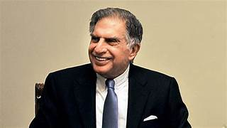

Ratan Tata
Chairperson of Jaguar Land Rover

Ratan Tata - The Chairperson .
Here's a time line of Ratan Tata:
- 1937 - Born in Mumbai, India
- 1975 - He graduated from the cornell University college of Architecture with a bachlors degree in Architecture.
- 1961 - He joined tata where he worked on the shop flor of tata steal. He later succeded J.R.D.Tata as chairman of tata sons upon the latter's requirement .
- 1970 - Tata was givan a managerial position in Tata Group .
- 2011 - Tata has never married and has no childern. He stated "i come close to getting married 4 times and each time I backed of "
- 2000 - Ratan Tata received the Padma Bhushan and padma Vibhushan in 2008 ,the third and second highest civillians houners awarded by Government of India.
- 2006 - Receives 'Maharashtra Bhushan' for his huge work in public administration in Maharashtra.
- 2021 - Receives 'Assam baibhav' for his exceptional contribution towards futuring cancer care in Assam .
- 2013 - He was appointed to board of trustees of the carnegie endowment for international peasce .
- 1868 - The Tata group was founded as a private trading firm by entrepreneur and philanthropist jamsetji Nusserwanji Tata .
- 1902 - The group incoporated the Indian Hotels Company to commition the Taj Mahal Palace. "Borlaug's life and achievement are testimony to the far-reachingRatan Tata is also a prolific investor and has made numerous investments in several startups. Tata has invested in over 30 start-ups till date, most from his personal capacity and some via his investment company.
-- "None can distroy iron , but its own rust can "
- the famous quote by Ratan Tata